2020年北京市中考地理试题 原卷解析
2020年北京市中考地理试卷
第一部分选择题（共40分）
本部分共40小题，每小题1分，共40分。在每小题列出的四个选项中，选出最符合题目要求的一项。
小鹤随父母前往某小区看房。图一为北京某小区平面示意图，图二为1号楼某户型图。读图，完成下面小题。
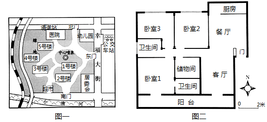
1. 小区东门在公交车站的（ ）
A. 西北
B. 东北
C. 西南
D. 东南
2. 小区中（ ）
A. 1号楼紧邻中心喷泉B. 医院在小区中心
C. 居委会距离北门最近D. 幼儿园靠近超市
3. 他们看中了1号楼中的图2户型，小鹤建议奶奶住卧室1的理由是（ ）
A. 面积约24m2B. 采光最好
C. 离客厅最近D. 可见中心喷泉
【答案】1. C 2. A 3. B
【解析】
【1题详解】
图一中既没有经纬网，也没有指向标，要按照“上北下南，左西右东”来判断方向，由此可判断，小区东门位于公交车站的西南方向。故选C。
【2题详解】
读图一可知，1号楼紧邻中心喷泉，医院在小区的北部，居委会距离南门最近，幼儿园靠近北门，超市靠近南门，幼儿园距离超市较远。故正确的是A。
【3题详解】
根据图二中的指向标可以判断，房间1的窗户是朝南的，采光最好。根据比例尺量算，房间1的面积约16平方米，距离客厅较远，看不见中心喷泉。故选B。
国际上将年龄在15~59岁的人口划定为劳动年龄人口。我国2016年1月起实施的“全面二孩”政策将影响未来劳动人口数量，下图为我国劳动年龄人口变化预测图。读图，完成下面小题。
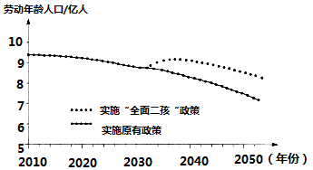
4. 政策实施后的10年间，我国劳动年龄人口数量（ ）
A. 持续增加B. 保持不变C. 先降后增D. 持续下降
5. 政策实施后将使我国（ ）
A 人口总数保持不变
人口总数保持不变
B. 老年人口数量减少
C. 劳动年龄人口降到8亿的时间延迟
D. 人口分布不均的格局发生明显改变
6. 我国从“人口大国”走向“人才强国”，需（ ）
①宣传“全面二孩”政策 ②完善社会养老服务体系
③提升全民科学文化素养 ④倡导全民终身学习理念
A. ①②B. ①③C. ②④D. ③④
【答案】4. D 5. C 6. D
【解析】
【分析】
【4题详解】
读图可知，我国劳动人口增加是在2030年以后，所以在2016年到2026年的10年间，我国劳动年龄人口的数量在持续下降。故选D。
【5题详解】
我国实施全面二孩政策后，我国的人口总量会增加，老年人数量不会减少，劳动年龄人口降到8亿的时间延迟，口分布不均的格局不会发生明显改变。故正确的是C。
【6题详解】
我国从“人口大国”走向“人才强国”，需要的是科技、是人才，所以需要提升全民科学文化素养，倡导全民终身学习理念，提高全民的科技文化水平。故选D。
【点睛】该题考查我国的人口政策和人口问题。读图分析解答。
“沧桑巨变七十载，民族复兴铸辉煌”。高速铁路承担客运服务，发展迅速，已成为国家名片。图一为中国高速铁路分布图，图二为中国高铁运营里程及占比统计图。读图，完成下面小题。
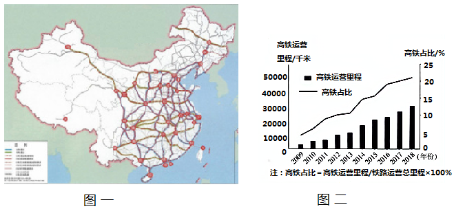
7. 我国高速铁路（ ）
A. 在东北地区分布最稀疏B. 在地势第一级阶梯上集中分布
C. 在平原地区分布均匀D. 稠密区与城市密集区分布一致
8. 2009~2018年间，我国高铁（ ）
A. 运营里程持续增长B. 运营里程匀速增长
C. 占比2013年最低D. 占比2017年后增长最快
9. 我国发展高铁可以（ ）
①加快矿产外运，发挥资源大国优势
②推动技术研发，促进现代制造业发展
③加强城乡联系，带动经济全面发展
④促进对外联系，加强国际交流与合作
A. ①②③B. ①②④C. ①③④D. ②③④
【答案】7. D 8. A 9. D
【解析】
【分析】
【7题详解】
读图可知：我国高速铁路在青藏地区分布最为稀疏，我国高铁分布在地势的第二、三级阶梯上，第一级阶梯尚无高铁，在平原地区分布不均匀，比如东北平原上的高速铁路较为稀疏，稠密区与城市密集区分布一致，故选D。
【8题详解】
2009~2018年间，我国高铁运营里程持续增长，占比2009年最低，占比2013年后增长最快，故选A。
【9题详解】
我国发展高铁可以推动技术研发，促进现代制造业发展，加强城乡联系，带动经济全面发展和促进对外联系，加强国际交流与合作，矿产资源一般不会选择高铁运输，所以我国发展高铁对矿产外运没有多大的关系，故选D。
【点睛】本题考查的是我国的高速铁路相关知识。
浙江省宁波某口罩厂从大连购买5万吨聚丙烯颗粒，用于生产医用外科口罩。下图为口罩产销过程示意及我国部分工业基地分布图。读图，完成下面小题。
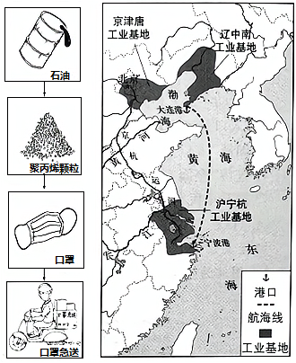
10. 石油是（ ）
A. 可再生的森林资源B. 可再生的淡水资源
C. 非可再生的矿产资源D. 非可再生的生物资源
11. 运输聚丙烯颗粒和快递口罩分别选择（ ）
A. 航空运输、公路运输B. 铁路运输、水路运输
C. 水路运输、公路运输D. 水路运输、铁路运输
12. 口罩厂所在的沪宁杭工业基地（ ）
A. 位于黄河三角洲地区
B. 江海联运的交通优势显著
C. 比辽中南工业基地水资源少
D. 与京津唐工业基地同临渤海
13. 健康人使用后的一次性口罩属于（ ）
A. 可回收物B. 厨余垃圾C. 有害垃圾D. 其他垃圾
【答案】10. C 11. C 12. B 13. D
【解析】
【分析】
【10题详解】
自然资源可分为可再生资源和非可再生资源，非可再生资源是指在使用完以后在短时间内不能再生的资源，石油是非可再生的矿产资源。故选C。
【11题详解】
读图可可脂，聚丙烯颗粒来自于大连，数量大，大连和宁波都是海港，海运便利，故使用海运，根据图示可知，运输口罩主要采用公路运输。故根据题意选C。
【12题详解】
读图可知，长江三角洲位于长江入海口，江海联运非常便利，该地区位于南方地区，水资源丰富，故与其他工业基地相比，江海联运交通优势显著。故选B。
【13题详解】
健康人使用的一次性口罩不属于厨余垃圾，也不是有害垃圾和可回收垃圾，属于其他垃圾。故选D。
【点睛】该题考查自然资源的分类、运输方式的选择和四大工业基地，读图分析解答。
国以农为本，民以食为天。自2018年起，我国将每年的秋分设为“中国农民丰收节”。下图为农业生产场景及中国四大地理区域图。读图，完成下面小题。
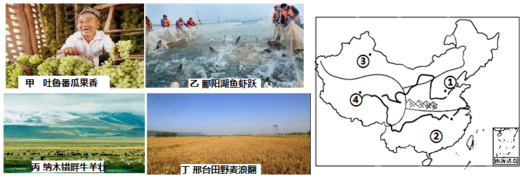
14. 景观图可能拍摄于（ ）
A. 甲-④地B. 乙-③地C. 丙-②地D. 丁-①地
15. 图中①②两地所在地理区域（ ）
A. ①-年降水量少于800mm，旱地为主
B. ①-河网密布，灌溉水源充足
C. ②-1月均温低于0℃，油菜种植广泛
D. ②-海拔较高，粮食作物喜温凉
16. 设立“中国农民丰收节”可以（ ）
①增加农民生活幸福感 ②体现春播的生产环节
③改变农村的生产方式 ④强化农业的基础地位
A. ①②B. ①④C. ②③D. ③④
【答案】14. D 15. A 16. B
【解析】
【分析】
【14题详解】
读图可知：甲是新疆吐鲁番中的瓜果，位于③表示的西北地区， 乙鄱阳湖位于②表示的南方地区， 丙纳木错位于④表示的青藏地区，丁邢台位于①表示的北方地区，故选D。
【15题详解】
读图可知：图中①为我国的北方地区，②为我国的南方地区，北方地区年降水量少于800mm，旱地为主，南方地区河网密布，灌溉水源充足，北方地区1月均温低于0℃，油菜为南方地区主要的油料作物，北方地区纬度高，粮食作物为喜温凉的小麦，故选A。
【16题详解】
设立“中国农民丰收节”可以增加农民生活幸福感 ，强化农业的基础地位，不能改变农村的生产方式，体现秋收的生产环节，故选B。
【点睛】本题考查的是我国的四大地理单元的农业以及因地制宜的发展农业。
为了解浙江省安吉县昔日污染严重的余村，转变为绿水青山美丽乡村的过程，某校师生开展了研学考察。下图为余村及周边等高线地形图和景观图。读图，完成下面小题。
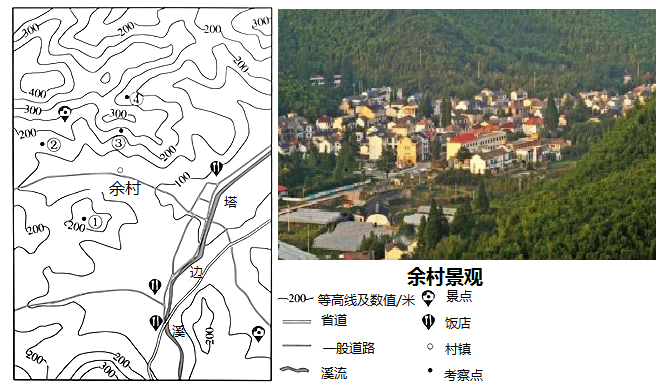
17. 图中（ ）
A. ①地海拔约300米B. ②地比③地海拔低、坡度更缓
C. ③地位于山脊、坡度陡D. ④地位于山谷，可见余村全貌
18. 余村在践行“绿水青山就是金山银山”理论的过程中，合理的做法是（ ）
A. 村北山区开辟采石场B. 村东南兴建水泥厂
C. 村西北发展生态旅游D. 鼓励村民外出务工
19. 与杭州相比，余村（ ）
A. 规模较大，高楼林立B. 公路纵横，车流不息
C. 港口众多，商贸发达D. 农田片片，竹林满山
【答案】17. B 18. C 19. D
【解析】
【分析】
【17题详解】
读图可知，图中等高距四50米，所以①地海拔在200-250米，故A不正确；②地海拔在150-200米之间，③地海拔在200-250米之间，②地的等高线稀疏，②地比③地海拔低、坡度更缓，故B正确；③地位于山谷、坡度陡，故C不正确，④地位于山谷，但是隔着山顶，见不到余村全貌。故D不正确。根据题意选B。
【18题详解】
读图可知，余村宝贝面试陡坡，北山区开辟采石场容易引发滑坡和泥石流，故A不正确；村东地势低平，适合发展种植业，南兴建水泥厂会造成污染，距离原料地也较远，故D不正确；村西北是缓坡，适合发展林果，可发展生态旅游，故C正确；鼓励村民外出务工不符合绿色发展理念。故D不正确。根据题意选C。
【19题详解】
读图可知，余村是乡村，杭州是城市，与杭州相比，余村规模小，房屋较矮，公路少，车辆少，商贸不发达。农田片片竹林满山是余村的景象。故选D。
【点睛】该题考查等高线地形图的判读和聚落的差异，读图解答即可。
沈括在《梦溪笔谈》中有以下记载：“诸越（泛指两广地区）则桃李冬实，朔漠（泛指西北地区）则桃李夏荣，此地气之不同也。一亩之稼，则粪溉者先芽；一丘之禾，则后种者晚实，此人力之不同也。岂可一切拘于定月哉？”据此，完成下面小题。
20. 这段文字表明（ ）
A. 同种作物，各地同时收获B. 不同地域，收获季节不同
C. 增施水肥，改变作物种类D. 适当晚播，提前收获作物
21. 由此可见，我国古人已经认识到（ ）
A. 一切不拘农时，获得更大效益
B. 通过改良品种，实施多种经营
C. 提高农业技术，改变自然环境
D. 顺应自然条件，兼顾人力作用
【答案】20. B 21. D
【解析】
【分析】
【20题详解】
南方冬天桃李能够结出果实，西北地区桃李只在夏天繁荣，这都是因为地域气候不同原因，表明不同地域，收获季节不同，故选B。
【21题详解】
这则材料的意思是南方冬天桃李能够结出果实，西北地区桃李只在夏天繁荣，这都是因为地域气候不同的原因，同一亩 地里的庄稼，用粪浇灌的就先发芽；同一丘地里的谷物，后种的就晚结实，这是人工栽培不一样造成的，由此可见，我国古人已经认识到顺应自然条件，兼顾人力作用，故选D。
【点睛】本题考查的是影响农业生产的自然条件等相关知识。
北回归线标志塔是标志地理学上北回归线经过地的建筑物。下图为我国局部区域图。读图，完成下面小题。
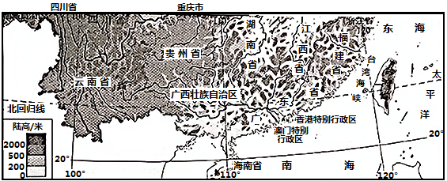
22. 某中学计划校园设立北回归线标志杆，该学校可能位于（ ）
A. 闽B. 桂C. 港D. 琼
23. 同学们手绘了我国地势沿北回归线剖面示意图，其中最接近实际的一幅是（ ）
A. B.
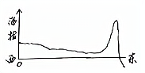
C.
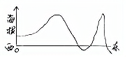
D. 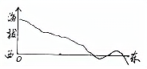
24. 台湾省北回归线标志塔会出现“立杆不见影”现象（ ）
A. 此时太阳直射赤道B. 此后影子出现在偏北方向
C. 一年中会出现两次D. 最适合在冬季观察
25. 能够反映台湾与祖国大陆文化同根同源的节假日是（ ）
A. 劳动节B. 端午节C. 世界地球日D. 世界环境日
【答案】22. B 23. A 24. B 25. B
【解析】
【分析】
【22题详解】
北回归线穿过我国南部四省区，自西向东分别是云南省、广西壮族自治区、广东省和台湾省，四省区的简称分别是云、桂、粤、台，以上四个省区中，要在学校设立北回归线标志塔的是桂，故选B。
【23题详解】
北回归线自西向东穿过云贵高原、东南丘陵，自西向东跨了第二、第三阶梯以及东部的台湾海峡，从海拔看，云贵高原平均海拔在2000米左右，台湾山脉海拔接近4000米，与图A的剖面图相符，故选A。
【24题详解】
台湾北回归线上出现“立杆不见影”现象，说明这一天出现了太阳直射现象，是夏至日，这一天之后，太阳直射点向南移动，影子朝向北边，该地区一年只有一次太阳直射现象，故选B。
【25题详解】
以上四个节日中，反映出台湾与内地同根同源的节日是端午节，其他三人节日是国际性节日，不是汉族节日，故选B。
【点睛】本题考查我国北回归线穿过的省区以及台湾有关知识。
下图中阴影区域为我国脱贫攻坚的重点工作区。随着扶贫工作的深入，该区域贫困人口大幅下降。读图，完成下面小题。
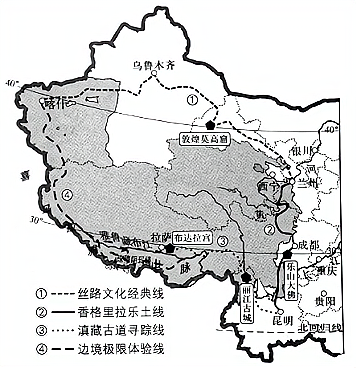
26. 该区域（ ）
A. 地处中高纬度地区B. 属于我国西北地区
C. 包含了青海省全境D. 是少数民族聚居区
27. 该区域东南部山区完成从“穷山沟”到“致富村”的转变，主要措施有（ ）
①守山护山，发展生态旅游 ②靠山吃山，加大陡坡开荒
③保持水土，留住绿水青山 ④升级电网，完善基础设施
A. ①②③B. ①②④C. ①③④D. ②③④
28. 该区域四条旅游线特色为（ ）
A. ①-越峻岭跨深谷，乐山悦水观大佛
B. ②-攀珠峰望冰川，携氧克艰破极限
C. ③-登阶梯渡大江，重走茶路游古城
D. ④-走大漠迎风沙，千年敦煌探宝窟
【答案】26. D 27. C 28. C
【解析】
【分析】
【26题详解】
由图可知，该区域地处中低纬度地区（纬度0°—30°为低纬度，30°—60°为中纬度），A错；包括我国青藏地区的大部分及西北地区的一小部分等，B错；包括了青海省的绝大部分（如青海省的西宁不在该区域），C错；是我国藏族等少数民族聚居区，D对。故选D。
【27题详解】
由图可知，该区域的东南部山区主要是指我国横断山区，我国横断山区完成从“穷山沟”到“致富村”的转变，主要措施有守山护山，发展生态旅游，保持水土，留住绿水青山，升级电网，完善基础设施等，靠山吃山，加大陡坡开荒会破坏环境，加剧贫困，①③④对，②错。故选C。
【28题详解】
图中①旅游路线没有经过四川省，看不到乐山大佛，路线②能看到乐山大佛，A错；②旅游路线没有经过珠穆朗玛峰，不能攀珠峰望冰川，路线④可以攀珠峰望冰川，B错；③旅游路线主要经过了我国横断山区、青藏高原东南部，能够登阶梯渡大江，重走茶路游古城，C对；旅游路线④没有经过甘肃敦煌，看不到敦煌莫哥窟，路线①能看到敦煌莫哥窟，D错。故选C。
【点睛】本题主要考查了我国西北、西南等地区的地理特征，考查了学生根据图片提取地理信息的能力。
2019年12月，联合国将每年5月21日确定为“国际茶日”。茶叶已成为很多发展中国家农民收入的重要来源。下图为某年世界主要产茶国茶产量比重。读图，完成下面小题。
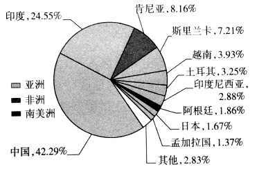
29. 据图可知（ ）
A. 主要产茶国多为发展中国家
B. 非洲的茶产量居世界第三位
C. 发展中国家中印度茶产量最多
D. 南美洲中的阿根廷茶产量最少
30. 联合国设定“国际茶日”是为了（ ）
A. 积极鼓励发达国家种植茶树，增加出口创汇
B. 提高发展中国家收入，促进茶文化广泛传播
C. 扩大世界茶树种植面积，改善大气环境质量
D. 改变茶树生长习性，增加世界各国茶叶产量
31. 作为传播茶文化的小使者，同学们可以（ ）
①参观茶博物馆 ②了解制茶过程
③学习茶艺 ④掌握烹饪技术
A. ①②③B. ①②④C. ①③④D. ②③④
【答案】29. A 30. B 31. A
【解析】
【分析】
【29题详解】
据图可知，产茶量居世界前十位的国家中，只有日本为发达国家，世界产茶量95%以上产在发展中国家，因此主要产茶国多为发展中国家，A正确；图中显示，产茶量居世界前十位的国家中，8个国家在亚洲，肯尼亚在非洲（产量约占世界总产量的8%以上），阿根廷在南美洲（产量约占世界总产量的1.86%以上），因此，世界各大洲相比，非洲的茶产量居世界第二位，B错误；图中显示，发展中国家中印度茶产量居世界第二，中国最多，C错误；南美洲中的阿根廷茶产量居世界第八，是南美洲茶产量唯一进前十的国家，因此南美洲中的阿根廷茶产量最多，D错误。故选A。
【30题详解】
联合国设定“国际茶日”将有利于中国同各国茶文化的交融互鉴，推动茶产业的协同发展，共同维护茶农利益且对发展中国家的农村发展、减贫和粮食安全发挥重要作用，因此，联合国设定“国际茶日”是为了提高发展中国家收入，促进茶文化广泛传播，B符合题意；许多发达国家的自然环境不太适合茶叶种植，且发达国家劳动力成本较高，而种植茶叶需要劳动力多，发达国家大多没有种植茶叶的优势，因此，联合国设定“国际茶日”不是为了积极鼓励发达国家种植茶树和增加出口创汇，排除A；茶树种植区一般是常绿阔叶林区，扩大世界茶树种植面积，对植被覆盖率影响不大，因此对改善大气环境质量的作用不明显，因此，联合国设定“国际茶日”不是为了改善大气环境质量，排除C；改变茶树生长习性，有可能改变茶叶的品质，由于区位条件不同，生产分工不同，没有必要增加世界各国茶叶产量，排除D。故选B。
【31题详解】
作为传播茶文化的小使者，同学们可以通过参观茶博物馆，了解茶文化，传播茶文化，①符合题意；同学们了解制茶过程，理解茶文化，从而更好地传播茶文化，②符合题意；同学们可以通过学习茶艺，体验茶文化，传播茶文化，③符合题意；烹饪技术不属于茶文化范畴，因此掌握烹饪技术与传播茶文化关联度小，④不符合题意。综上所述，A符合题意，排除B、C、D。故选A。
【点睛】国际茶日“于2019年11月27日第74届联合国大会宣布设立，时间为每年5月21日，以赞美茶叶对经济、社会和文化的价值，是以中国为主的产茶国家首次成功推动设立的农业领域国际性节日。将有利于中国同各国茶文化的交融互鉴，推动茶产业的协同发展，共同维护茶农利益。对发展中国家的农村发展、减贫和粮食安全发挥重要作用。
2020年世界海洋日暨全国海洋宣传日活动主题是“保护红树林，保护海洋生态”。红树林生长在受到潮水周期性浸淹的海岸地带。下图为世界红树林海岸分布图。读图，完成下面小题。
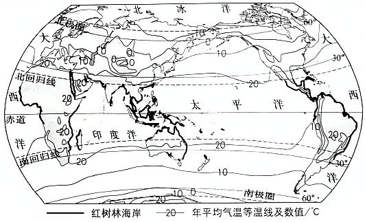
32. 图中（ ）
A. 年平均气温自北向南逐渐增加
B. 同纬度地区海洋比陆地气温高
C. 北半球海洋面积大于陆地面积
D. 南纬30°-60°之间海洋面积最小
33. 红树林（ ）
A. 分布区域北界的纬度高于南界
B. 集中分布于等温线密集的海岸地区
C. 多分布在年均温20℃以上的海岸地区
D. 广泛分布于大陆东岸海岸地区
34. 红树林被称为“消浪先锋”，其作用是（ ）
A. 保护海岸B. 吸烟滞尘C. 淡化海水D. 涵养水源
【答案】32. C 33. C 34. A
【解析】
【分析】
【32题详解】
读图分析可知，世界年平均气温自低纬度向高纬度递减，同纬度地区有的海洋比陆地气温高，有的陆地比海洋气温高，南纬30°~60°之间海洋面积最大。故ABD不正确。在地球上海陆面积之比是7:3，无论怎样划分成两个半球，都是海洋面积大于陆地面积。故C正确。
【33题详解】
读图可知，红树林多分布在年均温20℃以上的海岸地区，大部分位于热带地区。分布区域南界的纬度高于北界，集中分布于等温线稀疏的海岸地区，大陆的东西岸都有分布。故ABD错误，C正确。故选C。
【34题详解】
红树林位于海岸附近，对海浪有消减作用，避免了海浪对海岸的直接冲击，所以有保护海岸的作用。故选A。
【点睛】该题考查世界气温的分布规律和红树林的分布和作用，分析解答即可。
1996年至今，袁隆平团队通过联合国粮农组织，向非洲一些国家示范、推广杂交水稻技术。下图为非洲杂交水稻试验基地分布示意图。读图，完成下面小题。
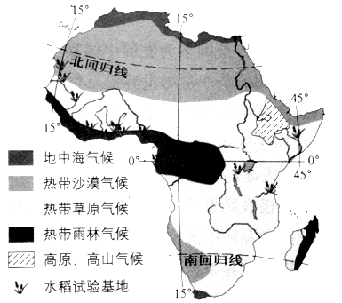
35. 水稻试验基地多分布在（ ）
A. 北半球的热带地区B. 地中海气候区
C. 高原、高山气候区D. 北回归线穿过的地区
36. 在不同气候区设立试验基地，可研究杂交水稻（ ）
A. 在雨林区的抗寒性B. 在草原区的耐热性
C. 在沙漠区的抗旱性D. 在高原区的节水性
37. 非洲国家引进杂交水稻技术，主要是为了（ ）
A. 增加水稻品种B. 扩大水稻种植面积
C. 提高粮食产量D. 抵御当地自然灾害
【答案】35. A 36. C 37. C
【解析】
【分析】
【35题详解】
由图可知，非洲的水稻实验基地多分布在北回归线与赤道之间（赤道以北为北半球）—北半球的热带地区，在地中海气候区、高原、高山气候区、北回归线穿过的地区没有水稻实验基地分布，A对，BCD错。故选A。
【36题详解】
由图可知，在不同气候区设立试验基地，可研究杂交水稻在雨林区的耐热性（热带雨林气候全年高温多雨），在草原区的节水性（热带草原气候全年高温，分干湿两季，干季降水少，气温高），在沙漠区的抗旱性（热带沙漠气候全年炎热干燥，降水稀少），在高原区的抗寒性（高原地区海拔高，气温低），C对，ABD错。故选C。
【37题详解】
非洲国家人口增长快，粮食产量低，存在严重的粮食问题，所以非洲国家引进杂交水稻技术，主要是为了提高粮食产量，而不是为了增加水稻品种、扩大水稻种植面积、抵御当地自然灾害，C对，ABD错。故选C。
【点睛】本题主要考查了非洲的气候、农业等，考查了学生根据图片提取地理信息的能力。
近年来，极地海冰范围的变化引起人们的广泛关注下图为1979-2013年间北极9月海冰范围变化图。读图，完成下面小题。
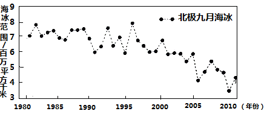
38. 北极地区有大范围的海冰体现了该区域（ ）
A. 纬度高，气温低B. 海拔高，光照强
C. 陆地广，风力大D. 海域小，降水足
39. 1979-2013年间北极地区（ ）
A. 淡水资源增多B. 海域面积减小
C. 陆地植物减少D. 适航范围扩大
40. 开展极地地区的海冰研究有助于（ ）
A. 研究全球气候变化B. 改变极地生态环境
C. 大量捕捞海洋生物D. 开采极地矿产资源
【答案】38. A 39. D 40. A
【解析】
【分析】
【38题详解】
北极地区纬度高，气温低，有大范围的海冰，海冰的形成受光照、风力和降水条件影响小，故选A。
【39题详解】
读图可知：1979-2013年间北极地区海冰范围减小，海平面上升，海域面积扩大，适航范围扩大，淡水资源不会增多，对陆地植物影响小，故选D。
【40题详解】
1979-2013年间北极地区海冰范围减小，说明全球变暖，所以开展极地地区的海冰研究有助于研究全球气候变化，故选A。
【点睛】本题考查的是北极地区相关知识。
41. 某校地理小组借鉴《航拍中国》的形式，以北京的文化带为主题开展了“云航拍”活动。下图为北京文化带分布及部分景观图。阅读图文资料，回答下列问题。
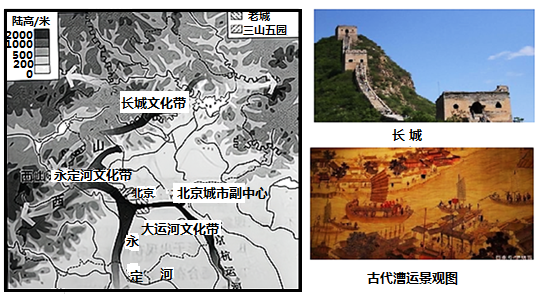
航拍主题一：长城文化带
长城是世界文化遗产。北京段长城在历史上拱卫着京城，是长城文化带的重要组成。
（1）景观图中，长城所处的地形部位是________。历史上，长城发挥了重要的防御作用，能作为该文化带的文化符号是________（单项选择）。
A.山间小路 B.连绵群山 C.兵营遗址 D.秦兵马俑
航拍主题二：西山永定河文化带
西山是北京西部群山的总称，永定河自西山蜿蜒流淌而出，被称为北京的“母亲河”。西山永定河文化带集合了皇家文化、宗教文化、民俗文化和红色文化等多种文化类型，“三山五园”是皇家文化的代表。
（2）同学们围绕“三山五园”选址的自然地理条件展开讨论。同学甲：从地形类型上看，这里位于________和________的过渡带，景观丰富。同学乙：西山呈________走向，冬挡西北风，防寒；夏迎东南风，________丰富。同学丙：这里水源充足，植被茂密，空气清新。
航拍主题三：大运河文化带
中国大运河是世界文化遗产，北起北京，南至杭州。北京段沿线留存的丰富历史文化印记，是北京大运河文化带的重要内容。
（3）大运河流经北京的平原地区，地势平坦，水流________，适合航运。历史上是沟通我国________（南北/东西）的交通运输大动脉，各地的人员和物资聚集在这里，形成了独特的漕运文化。当时从杭州进京的漕船上运载的物品可能是________（小麦/稻米），判断理由是________（至少写出两点）。如今，随着北京城市副中心的建设，当地人口增加，应建设________处理更多的生活污水，以保证大运河的水质。
（4）伴随着北京的建设与发展，古老的文化带焕发着新的生机。请在三个文化带中任选其一，从保护与开发的角度，提出你的具体建议。
【答案】（1）山脊 C
（2）平原 山地 东北——西南 降水
（3）平缓 南北 水稻 杭州位于南方地区，气候以亚热带季风气候为主，湿热的气候环境非常适合种植水稻，主要的粮食作物是水稻 生活污水处理设备
（4）我们要保护大运河，积极宣传运河文化，做强运河旅游产业。
【解析】
【分析】
本题考查对北京三条文化带的认识和理解，考查了三个文化带的地形、气候、河流等地理特征，需要学生结合图文材料有较强的读图分析能力。
【详解】（1）读图可知：景观图中，长城所处的地形部位是山脊。历史上，长城发挥了重要的防御作用，能作为该文化带的文化符号是兵营遗址。
（2）同学们围绕“三山五园”选址的自然地理条件展开讨论。同学甲：从地形类型上看，这里位于平原和山地的过渡带，景观丰富。同学乙西山呈东北——西南走向，冬挡西北风，防寒；夏迎东南风，降水丰富。同学丙：这里水源充足，植被茂密，空气清新。
（3）大运河流经北京的平原地区，地势平坦，水流平缓，适合航运。历史上是沟通我国南北的交通运输大动脉，各地的人员和物资聚集在这里，形成了独特的漕运文化。当时从杭州进京的漕船上运载的物品可能是稻米，判断理由是杭州位于南方地区，气候以亚热带季风气候为主，湿热的气候环境非常适合种植水稻，主要的粮食作物是水稻。如今，随着北京城市副中心的建设，当地人口增加，应建设生活污水处理设备处理更多的生活污水，以保证大运河的水质。
（4）中国大运河源远流长，是世界文化遗产。历史上，京杭大运河造就了贯通南北的漕运通道，促进了沿河两岸的商贸发展。我们要保护大运河，积极宣传运河文化，做强运河旅游产业。
42. 为了解黄河流域的生态环境治理取得的成就，地学小组的同学们开展了以“黄河的沙”为主题的“云研学”活动。下图为黄河流域及干流主要水文站不同年份输沙量统计图。阅读图文资料，回答下列问题。
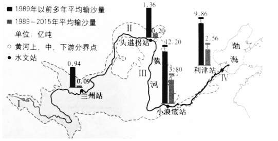
（1）与1989年以前相比，黄河干流1989～2015年的平均输沙量_________；1989～2015年的平均输沙量_________（单项选择）。
A.上游的兰州站为0.94亿吨 B.中游的小浪底站为3.80亿吨
C.下游的利津站最少 D.头道拐站比小浪底站少10.84亿吨
（2）黄河泥沙主要来自_________河段，某同学对其现象及形成原因做了如下总结。请找到其中三处错误。
黄河在此穿行于晋陇峡谷，黄土高原土质疏松、植被缺乏、侵蚀严重、春季降雨多以暴雨出现，加上当地长期开垦梯田种植柑橘，开采煤炭、石油等能源，使植被遭到严重破坏，导致了酸雨的形成。高原上的泥土大量进入黄河，使该段河床高于地面，从河水颜色看堪称真正的“黄”河。
示例：错误：导致了酸雨的形成
错误1：_________ ；错误2：_________；错误3：_________
（3）黄河携带的大量泥沙对下游产生了影响，请完成一一对应。
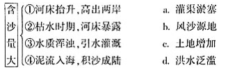
依据“黄河流域必须下大力气进行大保护、大治理，走生态保护和高质量发展的路子”的思想，同学们绘制了黄河流域协同发展的框图。
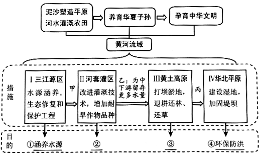
（4）从下列选项中选择分别与②、③对应的内容，填在相应位置。
A.水土保持 B.节约用水 C.减少污染 D.水力发电
（5）在治理好各自河段的同时，也要考虑对其下游河段的贡献。参照框图中的乙，写出甲和丙处的内容。甲：_______________。丙：____________。
【答案】（1）减少；B
（2）中游，穿行于晋陕峡谷；夏季降雨多以暴雨出现；开垦陡坡地种植农作物
（3）①——d；②——c；③——a；④——b
（4）B；A
（5）为上游灌区提供丰富的水源；减少进入下游的泥沙量
【解析】
【分析】
黄河源自巴颜喀拉山，流经青海、四川等9省区，注入渤海，全长5464千米，流域面积75.24万平方千米。内蒙古托克托县河口镇至河南省郑州桃花峪间的黄河河段为黄河中游，区间增加的水量占黄河水量的42.5%，增加沙量占全黄河沙量的92%，为黄河泥沙的主要来源。
【详解】据图分析可知：
（1）黄河是世界上含沙量最多河流，随着我国对黄河流域生态环境的治理与保护，与1989年以前相比，黄河干流1989～2015年的平均输沙量大幅减少；1989～2015年的平均输沙量上游的兰州站为0.09亿吨；中游的小浪底站为3.80亿吨；下游的利津站为2.56亿吨；头道拐站比小浪底站少3.60亿吨。故选：B。
（2）黄河是世界上含沙量最多的河流，其泥沙主要来自中游的黄土高原，黄河中游穿行于晋陕峡谷，由于降水集中在夏季，且降雨多以暴雨出现，加上当地长期长开垦陡坡地种植农作物等人为因素，植被遭到严重破坏，高原上的黄土大量进入黄河；所以错误1：穿行于晋陇峡谷，应为晋陕大峡谷；错误2：夏季降雨多以暴雨出现；错误3：长期开垦梯田种植柑橘，应为开垦陡坡地种植农作物。
（3）黄河从黄土高原携带的泥沙约有1/4沉积在下游河床，使河床平均每年增高10厘米，高出两岸，容易决堤，造成洪涝灾害；但枯水期时，河床暴露，会增加土地发展农业；由于水质浑浊，在进行引水灌溉时容易造成灌渠淤塞；当泥流入海后，积沙成陆，形成风沙源地。
（4）在河套平原，由于气候干旱，蒸发强烈，加上大量的用水，使黄河水量减少，在该地区改进灌溉技术，增加耐旱农作物的品种可以有效地节约用水，减少黄河和水的使用量；黄土高原的生态建设，应采取退耕还林还草等生物措施与建梯田、修挡土坝等工程措施相结合，治理水土流失，以达到保持水土的目的。
（5）为保护和治理黄河流域，在三江源地区进行水源涵养，修复和保护生态环境，为上游灌区提供丰富的灌溉水源；黄河泥沙主要来自中游的黄土高原，在中游的黄土高原打坝淤地，退耕还林、还草，为下游减少输入的泥沙。
【点睛】
43. 中欧班列是在各国原有铁路运输线路的基础上，形成横贯亚欧大陆、沟通两大洋的运输大动脉。下图为中欧班列主要路线图及两大经济地带相关资料。阅读图文资料，回答下列问题。
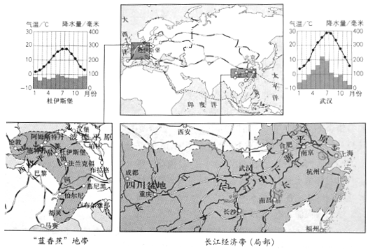
（1）区域比较是重要的地理学习方法。比较中欧班列连通的两大经济地带地理环境特征，完成表格。
项目 经济带 | 位置 | 主要河流名称 | 主要地形区 | 气候特征 |
长江经济带 （局部） | 东临太平洋 | 长江 | 长江中下游平原 | ____ |
“蓝香蕉”地带 | _____ | ____ | _____ | ____ |
通过比较，分析两地内河运输便利的原因。（至少写出三点）______________
（2）从欧洲返回的中欧班列常运载汽车整车及零部件等商品，这说明“蓝香蕉”地带__________。（至少写出两点）
中欧班列使沿线各国经贸合作领域不断拓宽，是沿线区际联系的重要纽带。
（3）中欧班列____________。（双向选择）
A.能够完全取代海洋运输 B.加强了沿线各国贸易往来
C.促使沿线城市均匀分布 D.促进沿线的基础设施建设
【答案】 (1). 夏季高温多雨，冬季温暖湿润 (2). 西临大西洋
(3). 莱茵河 (4). 西欧平原
(5). 全年温和湿润 (6). 地势地平，水量大，水流平稳 (7). 工业发达，工业工艺精 (8). BD
【解析】
【分析】
本题考查学生的读图分析和比较分析地理事物的能力，读图分析解答。
【详解】（1）读图可知，长江沿江地带位于亚洲东部，东临太平洋；蓝香蕉地带位于欧洲西部，北临北海，包括德国、法国、意大利、英国等地区，位于莱茵河沿岸地带。长江经济带主要地形是位于长江中下游平原，蓝香蕉地带位于西欧平原和中欧平原；长江经济带属于亚热带季风气候，夏季高温多雨，冬季温暖湿润，欧洲西部属于温带海洋性气候，全年温和湿润。比较可知，两地都是河运便利的地区，结合地形和气候的知识可知，两地都位于平原上，地势地平，水流平稳，两地降水都很丰富，水量大，都位于人口稠密、经济发达的地区，所以水运发达。
（2）欧洲西部是世界上发达国家集中的地区，这里是世界工业革命的发源地，制造业发达，工业工艺精，技术水平高，所以工业产品畅销世界各地。
（3）结合实际理解可知，中欧班列不能够完全取代海洋运输，能够加强了沿线各国贸易往来，能够促进沿线的基础设施建设。故选BD。
【点睛】该题考查长江经济带和欧洲西部的经济，读图分析解答即可。
44. 阿根廷与中国距离遥远，是我国的友好国家。小鹤以“攀山赏水观壮美风景，游城登岛品异域文化”为主题进行了阿根廷旅游活动的推介。请你结合资料完成推介理由。
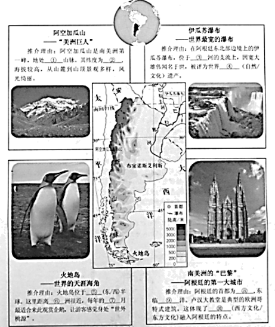
阿根廷多样的自然环境，形成富有地理特色的文化习俗，给世界提供了丰富的旅游资源，也促进了当地经济和文化的发展。
【答案】①安第斯山脉 ②南纬32°39′ ③巴拉那河 ④自然 ⑤西 ⑥南极洲 ⑦12-2⑧ 布布伊诺斯艾利斯 ⑨大西 ⑩西方文化
【解析】
【分析】
本题重点考查学生的读图能力，分析能力，是较难的综合题，读图结合所学知识来解答。
【详解】（1）阿空加瓜山，地处阿根廷门多萨省西北端，南纬32°39′，西经70°；海拔6962米，是亚洲之外最高的山峰，为西、南半球最高峰，山峰坐落在安第斯山脉南部。
（2）伊瓜苏大瀑布是世界上最宽的瀑布，位于阿根廷与巴西边界上伊瓜苏河与巴拉那河合流点上游23千米处，为马蹄形瀑布，高82米，宽4千米，平均落差75米。1984年，被联合国教科文组织列为世界自然遗产。
（3）读图可知，火地岛位于南美洲最南端，距离南极洲最近，位于西半球，南半球，每年达12-次年2月是南半球的夏季，是最适合来此旅游的季节。
（4）读图可知，阿根廷的首都是布宜诺斯艾利斯，东临大西洋，阿根廷90%以上的居民都信仰天主教，大大小小的天主教堂遍布城乡各地。而距布宜诺斯多利斯70公里的卢汉市的卢汉圣母院是红衣主教的驻节地，是全国天主教的圣地。卢汉圣母院又称卢汉大教堂或卢汉天主教堂，始建于1887年。建筑风格是典型的哥特式，为阿根廷最古老的城市之一。这体现了西方文化融入阿根廷的特点。
【点睛】该题考查南美洲的位置、地形、河流、城市。读图分析解答即可。
本试卷的题干、答案和解析均由组卷网（http://zujuan.xkw.com）专业教师团队编校出品。
登录组卷网可对本试卷进行单题组卷、细目表分析、布置作业、举一反三等操作。
试卷地址：在组卷网浏览本卷
组卷网是学科网旗下的在线题库平台，覆盖小初高全学段全学科、超过900万精品解析试题。
关注组卷网服务号，可使用移动教学助手功能（布置作业、线上考试、加入错题本、错题训练）。
学科网长期征集全国最新统考试卷、名校试卷、原创题，赢取丰厚稿酬，欢迎合作。
钱老师 QQ：537008204 曹老师 QQ：713000635